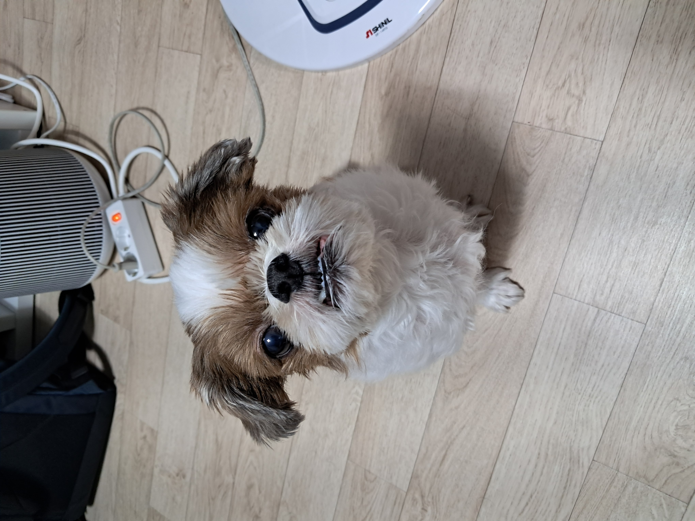
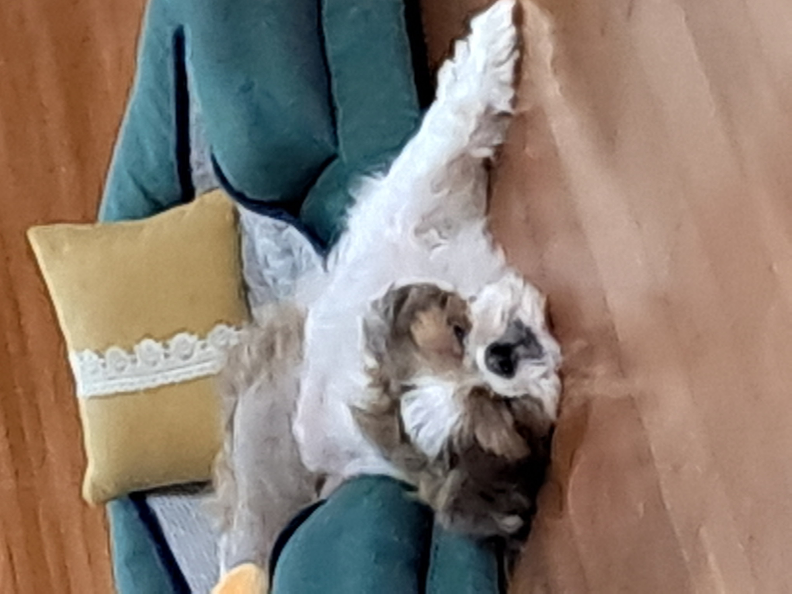
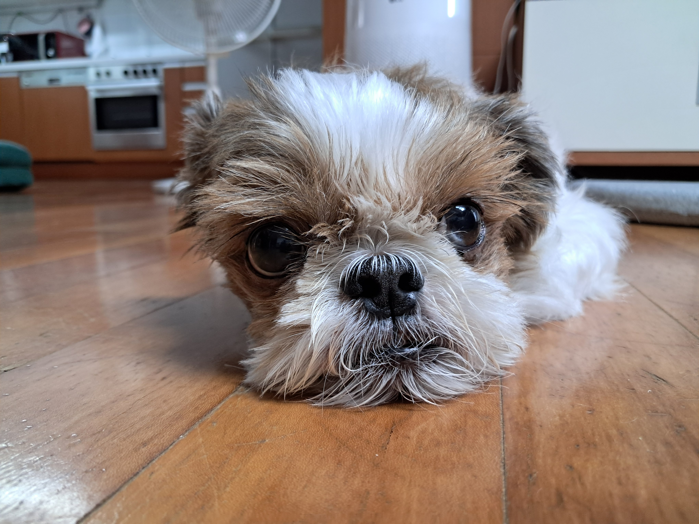

Life & Value
알고 보면 따뜻하고 둥글둥글한 동료
기술의 차가움을 부드럽게 완화하는 세심함과 성실함으로 팀 전체의 신뢰와 화합을 만들어 냅니다.
12년차 단짝 시츄 문식이
반려견 문식이와의 소소하고 따뜻한 일상을 아끼며 소중히 보살피는 마음처럼, 주변 동료들을 세심하게 챙기고 팀의 분위기를 따스하게 이끕니다.
TFT와 전략적 유쾌함
퇴근 후 롤토체스를 즐기며 전략적인 빌드업을 설계하는 유쾌함을 지니고 있습니다. 매 상황 유연한 전략을 설계하는 능력을 가지고 있습니다.
성실하게 기록하는 개발 로그
배우고 겪은 경험을 개발 블로그에 꾸준히 정돈해 나가며 꼼꼼하게 아카이빙합니다. 팀원들과 열린 지식 공유 및 소통을 추구합니다.
🐾 문식이의 따뜻한 일상 갤러리
지친 공부 시간 뒤에 항상 포근한 위로를 주는 소중한 단짝의 소소한 일상 조각들

Munsik Life #1
"공부 방해용 모니터 앞 지키미"
코드가 안 풀릴 때 턱밑까지 다가와 강제로 꿀맛 같은 휴식을 선물하는 사랑스러운 방해 공작

Munsik Life #2
"기적의 가성비 산책 후 완전 기절"
신나게 산책을 마친 후, 따뜻한 거실 장판에서 세상 편안하게 단잠에 빠진 모습

Munsik Life #3
"초롱초롱한 눈빛의 최애 고구마 간식 대기 자세"
이 맑고 간절한 눈빛을 마주하면 그 어떤 디버깅 세션 중이라도 벌떡 일어나 부엌으로 향하게 됩니다